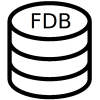
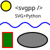

Welcome. I'm a person who likes math, computers, and more. I regularly work on various ideas involving math and code and always try to keep learning more to keep myself busy. My strongest interests are in math proofs, algorithms, and high performance computing.
I am currently in Albuquerque, New Mexico, and working at Stellar Science, a software company. I work on C++ desktop applications for various physics/simulation tasks.
I am always looking for more interesting things to do. If you have interesting ideas for a math or programming project, comments about this website, or professional/work/research opportunities, please see the contact section.
Projects


Professional Experience
Education
- M.S. in Applied Mathematics from Rensselaer Polytechnic Institute (Aug 2022 – May 2023)
- B.S. in Computer Science and Mathematics from Rensselaer Polytechnic Institute (Aug 2017 – May 2022)
Work
- C++ Software Engineer at Stellar Science (March 2025 – Present)
- Graduate Research Assistant at Rensselaer Polytechnic Institute (May 2022 – May 2023)
- Undergraduate Teaching Assistant at Rensselaer Polytechnic Institute (Aug 2018 – May 2022)
- Undergraduate Research Assistant at Rensselaer Polytechnic Institute (Jan 2020 – Aug 2020)
See my Resume/CV page for more details.
Contact
Email: tkoz@tkoz.me
Discord: tkoz (formerly TKoz#9039).
Reddit: u/tkoz0
LinkedIn: in/kozlot
GPG Keys: For secure email, here are my public rsa and curve25519 (preferred) keys.
If you like my work and want to support me, here is my Paypal link.
Page last updated: 2026-10-10